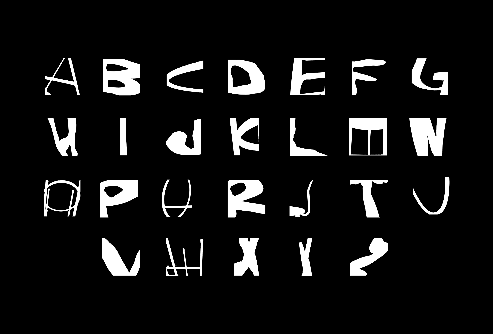
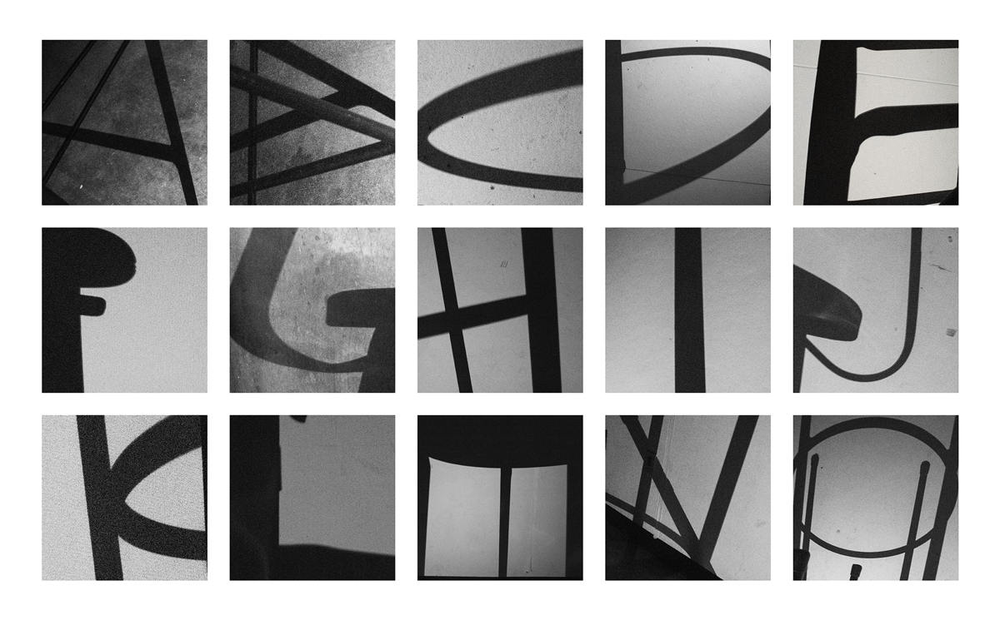
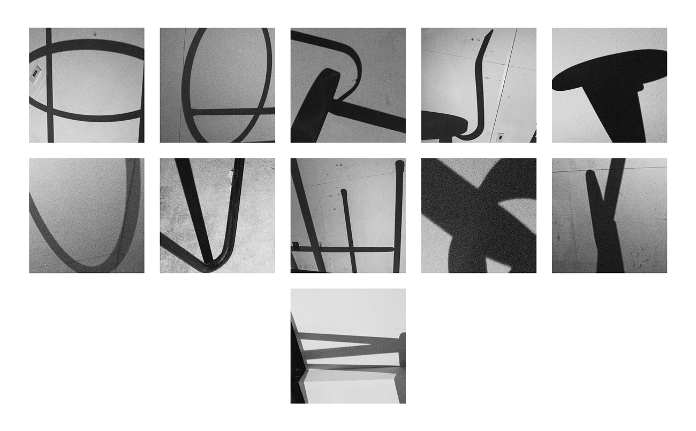
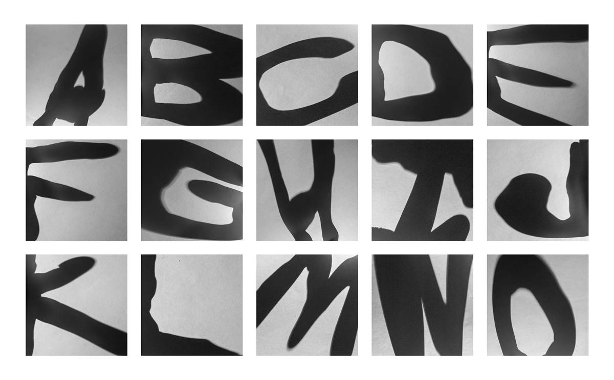
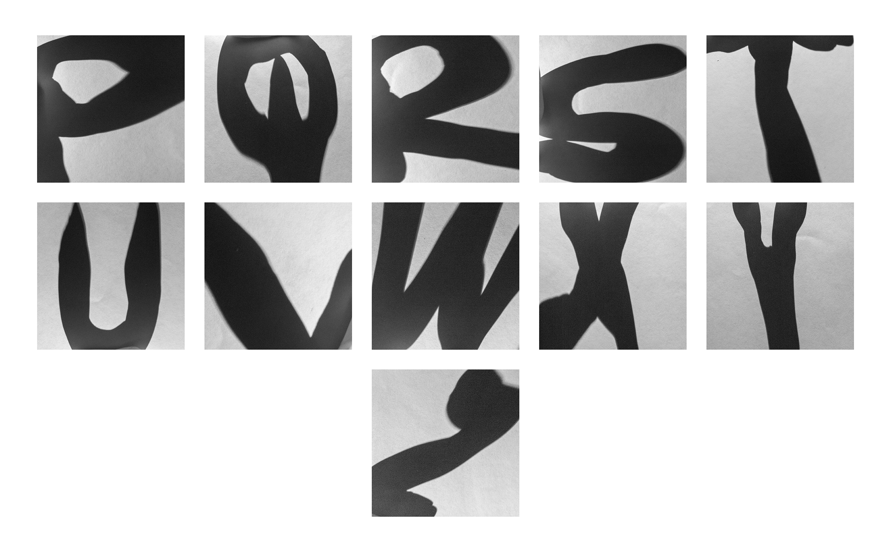
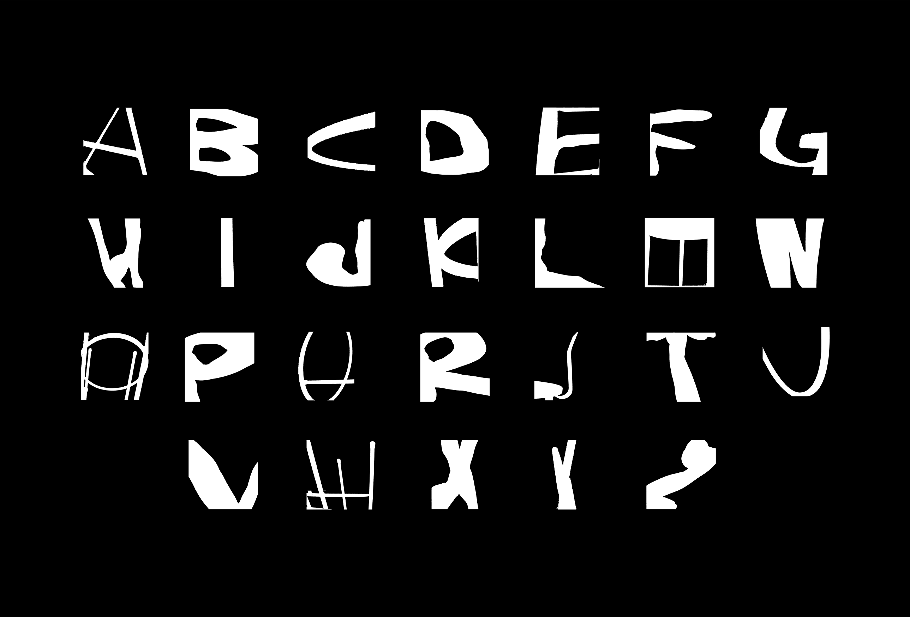
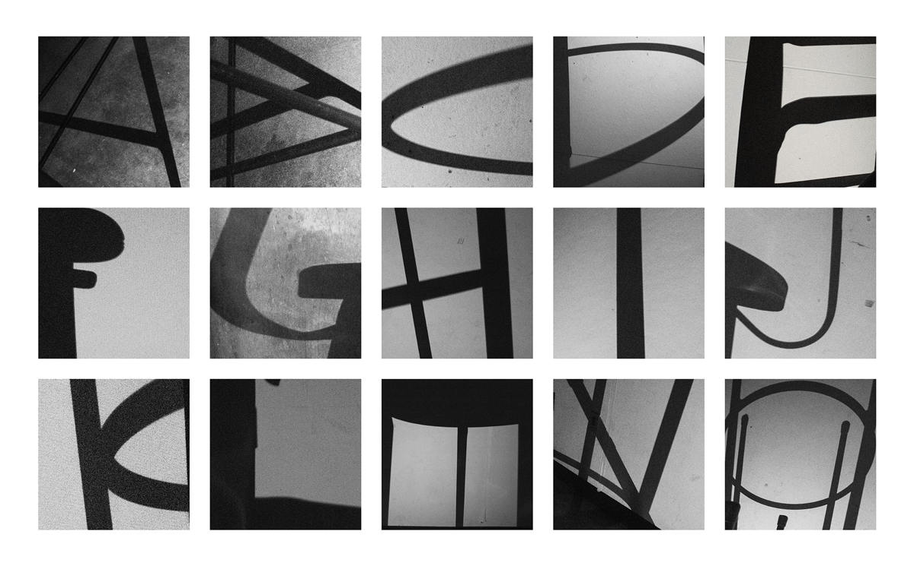
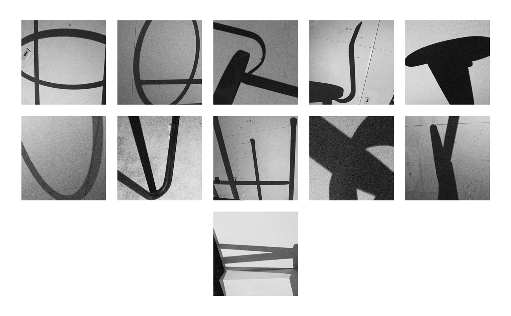
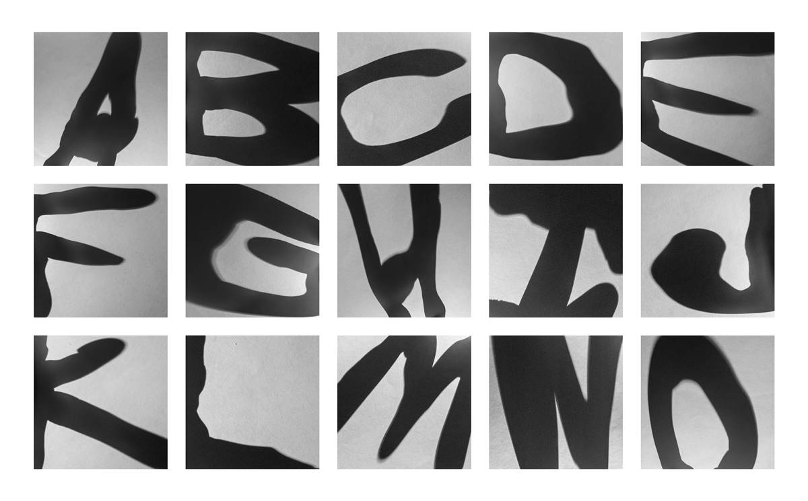
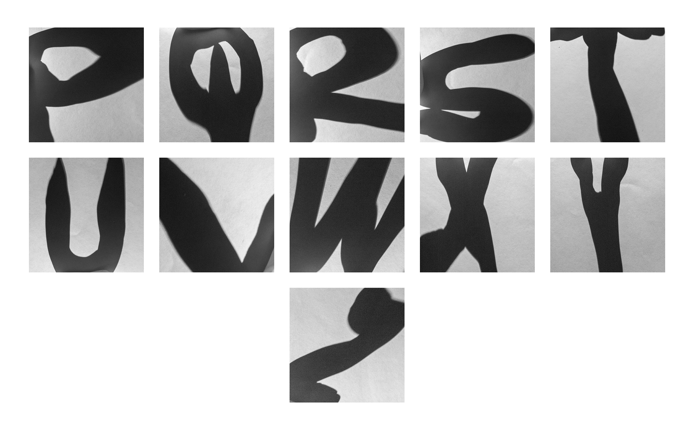

simply organic
poster - 24” × 36”, letterset | 2018/2022
the objective? only use objects and photography to create a letterset. the solution? grab the closest chair i could find and clay to create two full lettersets. how exactly? i was intrigued by their shadows. by capturing their shadows i was able to create contrast and manipulate their shape to become something recognizable. what came from this project was an opportunity to show not only the contrast in color but the contrast created by both objects. a poster was then created with the letters to see it all come together. the letters were placed in an un-alphabetical order so the user can appreciate the forms created by the shadow on the poster.

 








